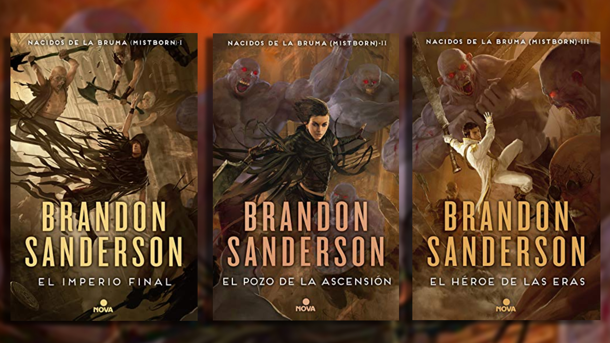
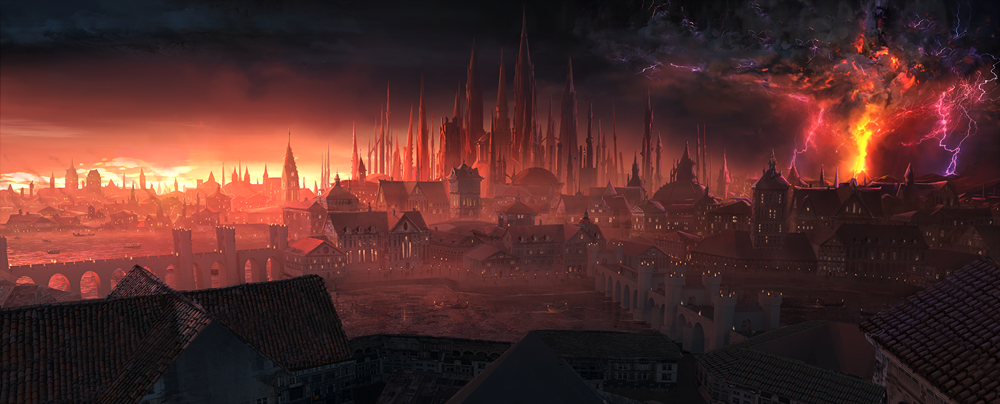
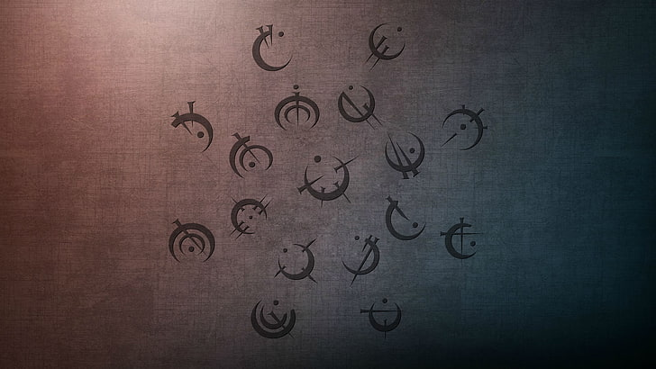
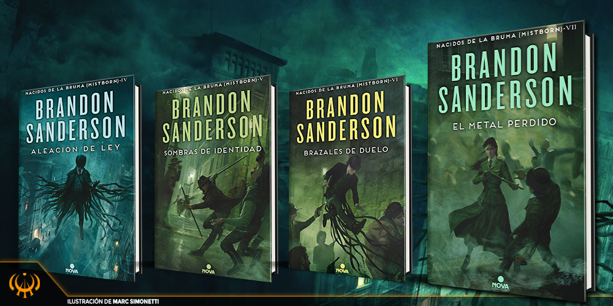

¿Por qué deberías leer Nacidos de la Bruma?
¿Estás buscando una historia que te atrape desde la primera página? Entonces debes conocer Nacidos de la Bruma de Brandon Sanderson, una de las sagas de fantasía más originales y revolucionarias de los últimos tiempos. Esta obra no solo reinventa lo que entendemos por “fantasía épica”, sino que lo hace con una profundidad narrativa que conmueve y desafía al lector en cada capítulo. Desde el primer momento, sentirás que entras a un universo tan opresivo como fascinante, lleno de secretos, traiciones, poderes ocultos y esperanzas frágiles.
En lugar del clásico héroe con espada y armadura brillante, Sanderson nos presenta a Vin, una joven ladrona menuda y desconfiada, que ha aprendido a sobrevivir en los rincones más oscuros de una ciudad consumida por la desigualdad. Gobierna un ser llamado Lord Legislador, que hace mil años fue considerado un salvador... pero que ahora reina como un dios tirano, manipulando incluso el clima y el color del cielo. ¿La misión de Vin? Unirse a una banda de rebeldes liderada por el legendario Kelsier y llevar a cabo lo impensable: asesinar a un dios.
La saga nos transporta a Luthadel, una ciudad oscura donde la ceniza cae sin cesar del cielo, cubriendo los tejados, las calles y los sueños. Los nobles viven con lujos heredados, mientras los Skaa —una clase oprimida y esclavizada— sobreviven como pueden en una sociedad que los considera poco más que animales. Pero incluso en este entorno desolador, la esperanza comienza a arder como una chispa cuando Kelsier, el único hombre que escapó de las temidas minas de Hathsin, decide luchar contra el régimen con una sonrisa en el rostro y fuego en el corazón.
En el corazón de esta lucha está la Alomancia, un sistema de magia completamente innovador, basado en la quema de metales ingeridos. Cada metal otorga una habilidad diferente: empujar o atraer metales, agudizar los sentidos, manipular emociones... y si tienes la suerte (o maldición) de poder quemarlos todos, entonces eres un verdadero Nacido de la Bruma. Pero cuidado, porque aquí las batallas no las ganan los más fuertes, sino los más astutos. Este sistema de magia no solo es coherente, sino que también se integra magistralmente en el desarrollo de la historia y las estrategias de combate.
La ambientación sombría, con una constante neblina que lo cubre todo por las noches, crea un entorno tenso, misterioso y profundamente melancólico. La bruma es más que un fenómeno: es un personaje más, una presencia viva que susurra en cada rincón y protege —o amenaza— a los alománticos. Pocas veces se ha sentido un mundo tan atmosférico, tan impregnado de su propia tristeza y belleza oscura.
Y no podemos olvidar a los personajes. Vin, la niña que aprendió a no confiar en nadie, se convierte poco a poco en un símbolo de resistencia y esperanza. Elend Venture, un noble con conciencia, se rebela contra su propia clase buscando justicia. Y por supuesto, Kelsier, el líder carismático y rotundamente humano, que con cada sonrisa esconde una cicatriz más profunda. Ellos no solo luchan contra un imperio, luchan por un mundo donde las personas puedan volver a reír sin miedo, a vivir sin cadenas, a soñar sin ser castigadas.
